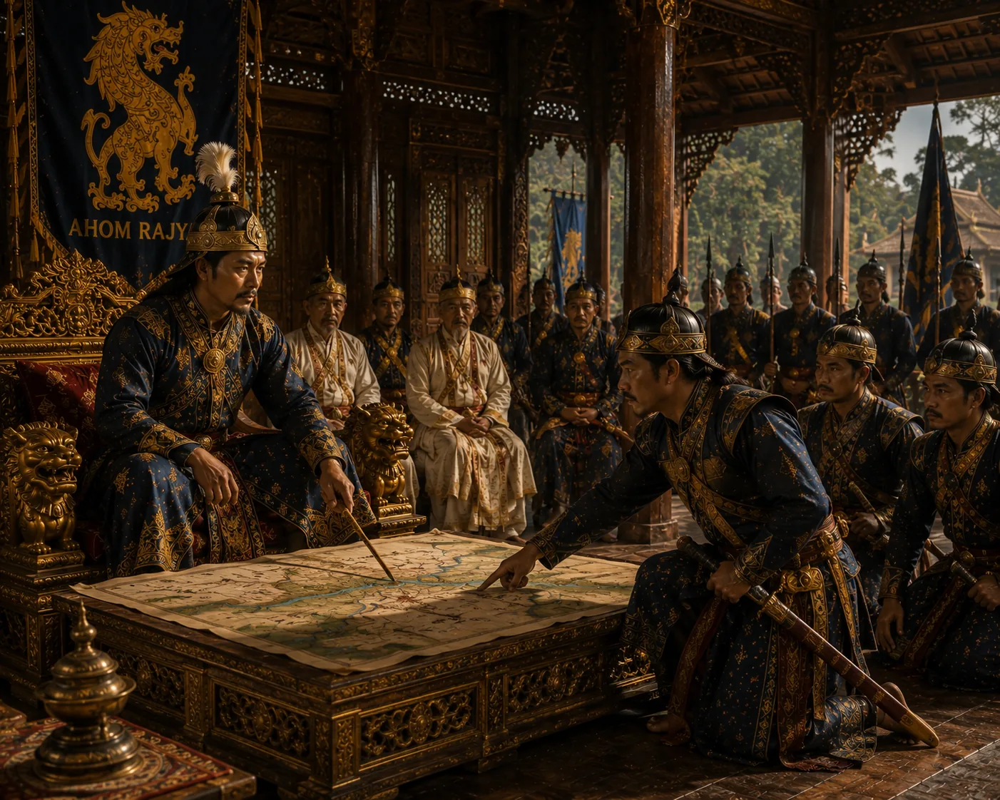

Strategic War Council in the Royal Chamber
c. 1532 · Swarganarayan’s kingdom

The king and top commanders review maps, troop movements, river currents, and fortress fortifications on the eve of battle.
Sources have not yet been catalogued for this record.
People: Suhungmung (Swarganarayan)